Introduction
This vignette provides a high-level overview of all GLEAM modules, the sequence of their functions, and their input and output datasets. An overview of the full pipeline is provided in the GLEAM Overview. Full documentation for each module is available via the module reference pages linked in each section below.
Herd Simulation Module
See run_demographic_herd_module()
for full documentation.
This module takes herd- and cohort-level demographic inputs and estimates a steady-state sex–age herd structure compatible with downstream calculations in GLEAM. In addition to cohort population sizes, it derives population growth rates and offtake numbers. The steady state is defined as a constant sex–age cohort structure over time, with population size potentially growing or declining at a constant rate.
The module operates under a steady-state assumption: demographic parameters are constant over time, so the population converges to a stable cohort composition and a constant annual growth rate. Once this regime is reached, the model computes cohort population sizes (start/end/average), cohort shares, and offtake totals.
A key feature of this implementation is that it applies demography at a daily resolution. Annual mortality and offtake inputs are converted into daily hazards and daily transition probabilities under competing risks (death vs. offtake vs. survival). Conceptually, this corresponds to the steady-state demographic approach implemented in Dynmod STEADY1 (Lesnoff, 2013), adapted here to a daily time-step formulation.
The population is divided by sex (female/male) and age class
(juvenile/subadult/adult), represented by six cohorts: FJ,
FS, FA (female juvenile, subadult, adult) and
MJ, MS, MA (male juvenile,
subadult, adult).
Overview of the GLEAM demographic herd module with functions, input and output:
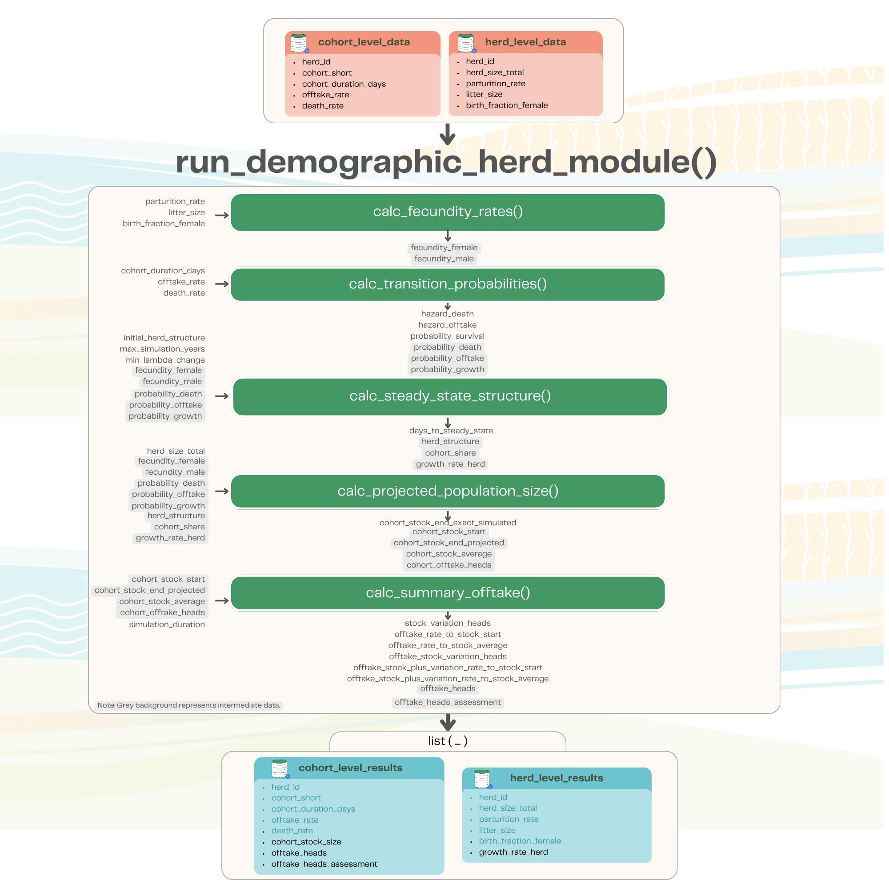
Weights Module
See run_weights_module()
for full documentation.
Computes cohort-level live weight metrics by combining cohort-level inputs with herd-level biological parameters. The module appends cohort weights (initial, potential final, slaughter), then derives average and final live weights accounting for offtake, and finally computes average daily live weight gain over each cohort stage.
Overview of the GLEAM weights module with functions, input and output:
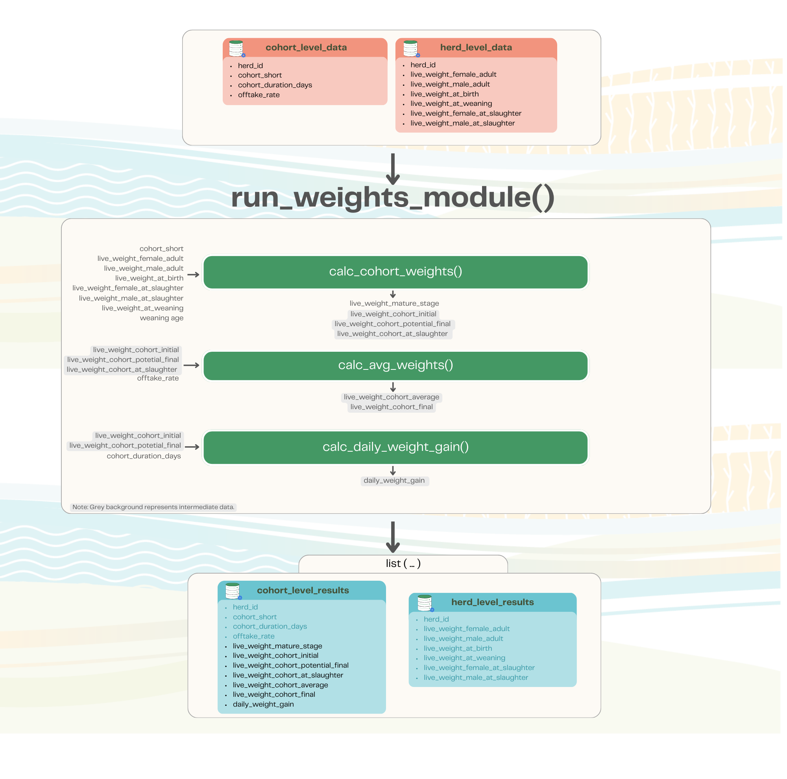
The calculation pipeline consists of the following steps:
-
Cohort-stage weight assignment — herd-level
biological parameters are matched to each cohort row by
herd_idand weights are assigned per life stage usingcalc_cohort_weights(). -
Average and final live weights (accounting for
offtake) — computed using
calc_avg_weights(). -
Average daily live weight gain — computed using
calc_daily_weight_gain().
Ration Nutritional Content Module
See run_ration_quality_module()
for full documentation.
Computes cohort-level diet nutritional metrics — gross and metabolizable energy content, digestibility, nitrogen content, urinary energy losses, and ash content — from cohort-level feed ration composition shares and feed component nutrient parameters.
Overview of the GLEAM herd module with functions, input and output:
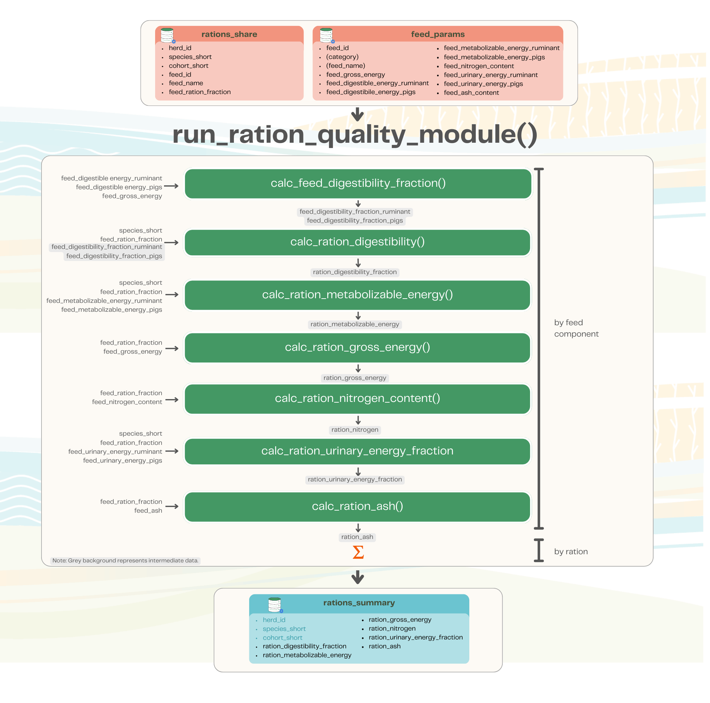
The module joins ration shares with feed parameters by
feed_id, uses species_short for
species-specific lookups, and computes ration-weighted nutritional
metrics by cohort through the following steps:
- Species-specific digestibility fractions are computed from energy
parameters using
calc_feed_digestibility_fraction(). - Contributions of each feed component are computed as ration-weighted
values for:
- gross energy —
calc_ration_gross_energy() - nitrogen —
calc_ration_nitrogen_content() - digestibility —
calc_ration_digestibility() - metabolizable energy —
calc_ration_metabolizable_energy() - urinary energy fraction —
calc_ration_urinary_energy_fraction() - ash —
calc_ration_ash()
- gross energy —
- Component contributions are summed to produce cohort-level diet
metrics, including
calc_ration_intake().
Metabolic Energy Requirements and Ration Intake Module
See run_metabolic_energy_req_module()
for full documentation.
Computes cohort-level daily energy requirements (MJ/head/day) and feed dry matter intake (kg DM/head/day) by applying the IPCC Tier 2 energy partitioning functions.
Energy requirements are expressed as net energy (NE) for CTL, BFL, SHP, and GTS, and as metabolizable energy (ME) for CML, PGS, and CHK. The module computes the following energy partitions:
- Maintenance —
calc_metabolic_energy_req_maintenance() - Activity —
calc_metabolic_energy_req_activity() - Growth —
calc_metabolic_energy_req_growth() - Lactation —
calc_metabolic_energy_req_lactation() - Pregnancy —
calc_metabolic_energy_req_pregnancy() - Work (draught power; CTL, BFL, CML only) —
calc_metabolic_energy_req_work() - Fibre production (SHP, GTS, CML only) —
calc_metabolic_energy_req_fibre()
Total energy requirements are then aggregated using calc_total_metabolic_energy_req(),
and dry matter intake is derived using calc_ration_intake()
by dividing the total energy requirement by the diet energy density.
Overview of the GLEAM metabolic energy requirements module with functions, input and output:
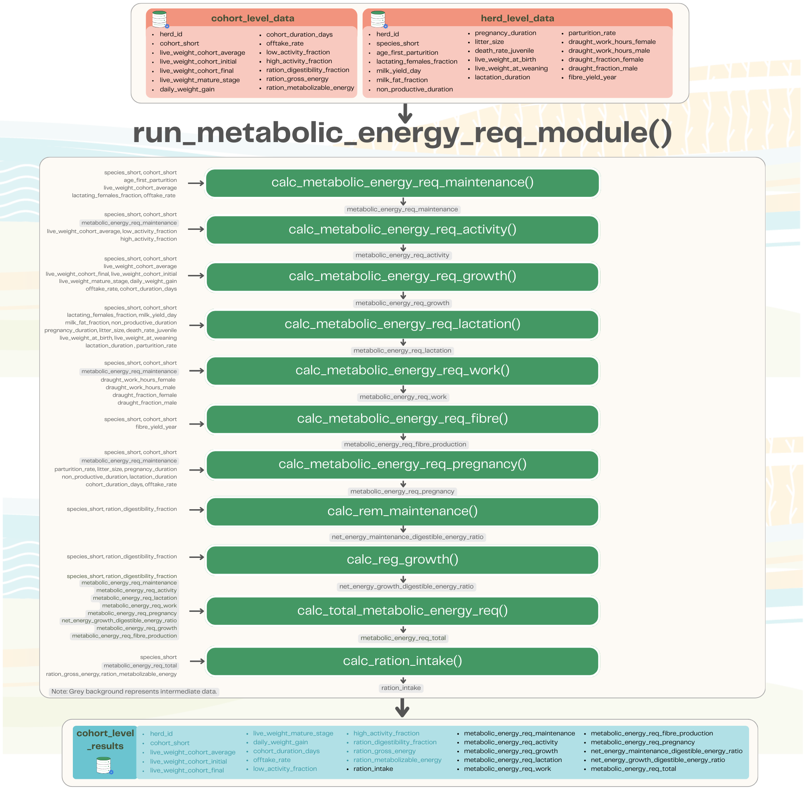
See run_emissions_enteric_module()
for full documentation.
Overview of the GLEAM enteric emissions module with functions, input and output:
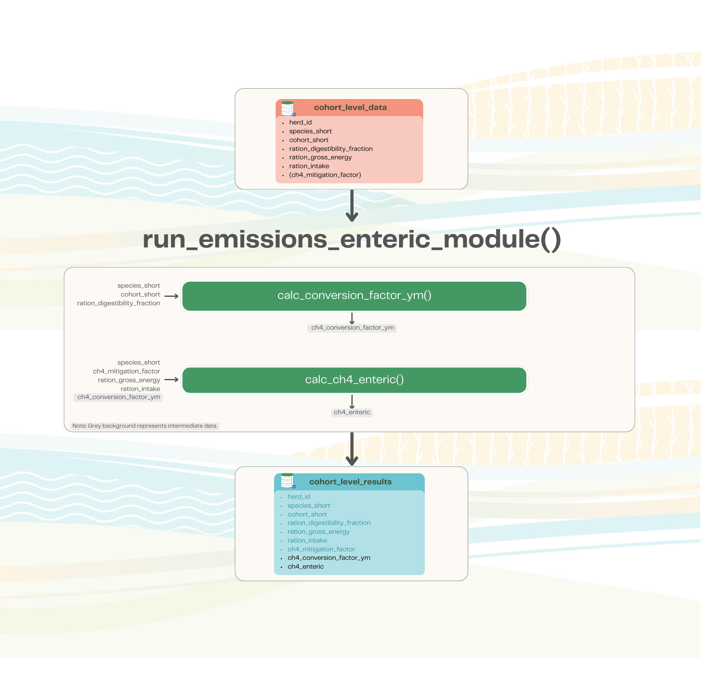
The calculation pipeline consists of the following steps:
- If
ch4_mitigation_factoris not provided in the input data, it is set to1(no mitigation). - The methane conversion factor (ym) is computed using
calc_conversion_factor_ym(). - Daily enteric methane emissions are computed using
calc_ch4_enteric().
Nitrogen Balance Module
See run_nitrogen_balance_module()
for full documentation.
Computes cohort-level daily nitrogen intake, retention, and excretion (kg N/head/day) following the IPCC Tier 2 approach.
Overview of the GLEAM nitrogen balance module with functions, input and output:
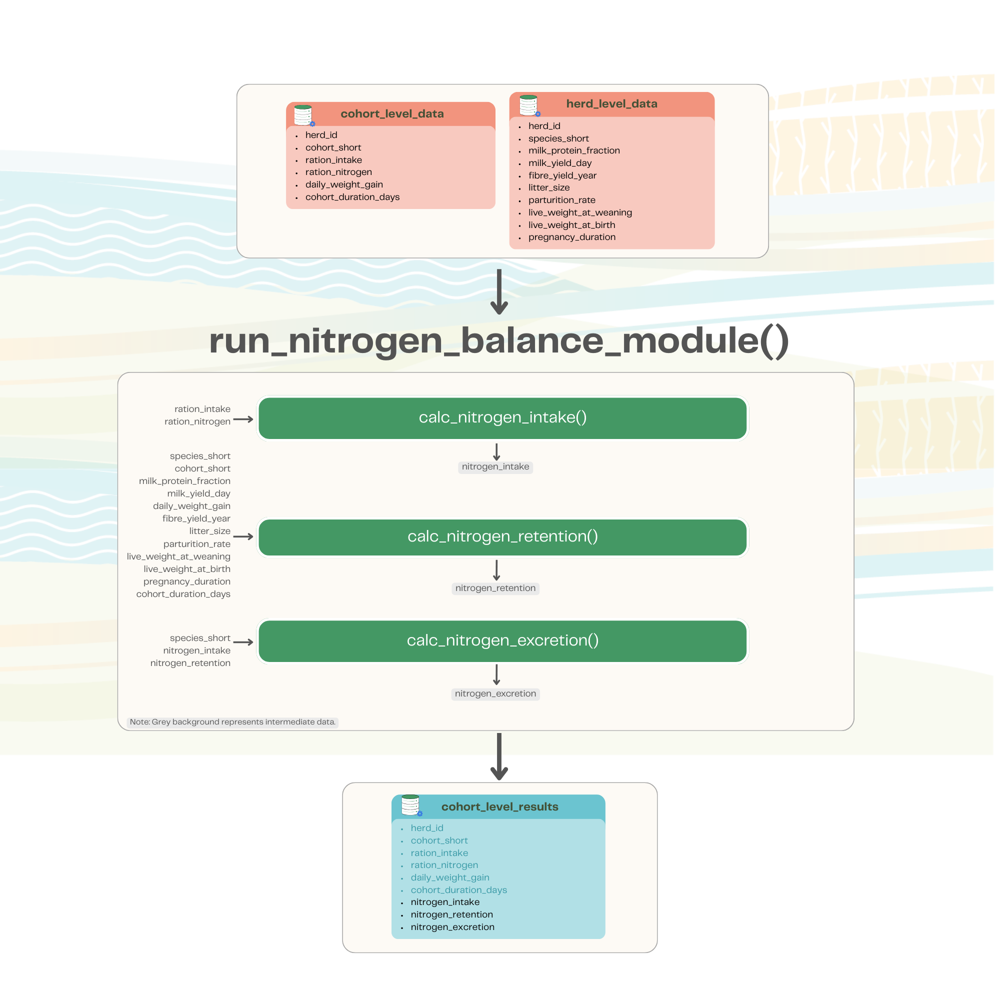
The following calculation sequence is applied:
- Daily nitrogen intake is computed from
ration_intakeandration_nitrogenusingcalc_nitrogen_intake(). - Daily nitrogen retention (in body tissues and products such as
growth, pregnancy, and milk) is computed using
calc_nitrogen_retention(). - Daily nitrogen excretion is computed as intake minus retention using
calc_nitrogen_excretion().
Manure Emissions Module
See run_emissions_manure_module()
for full documentation.
Computes cohort-level greenhouse gas emissions from manure management systems (MMS) following the IPCC Tier 2 methodology, using volatile solids (VS), MMS allocation fractions, and MMS-specific emission factors.
For each herd_id, the set of MMS identifiers must be
consistent between the manure_management_system_fraction
and manure_management_system_factors tables. The following
calculation sequence is applied:
-
Volatile solids (VS) excretion is computed from
feed ration nutritional parameters (digestibility, urinary energy, ash)
using
Overview of the GLEAM manure emissions module with functions, input and output:
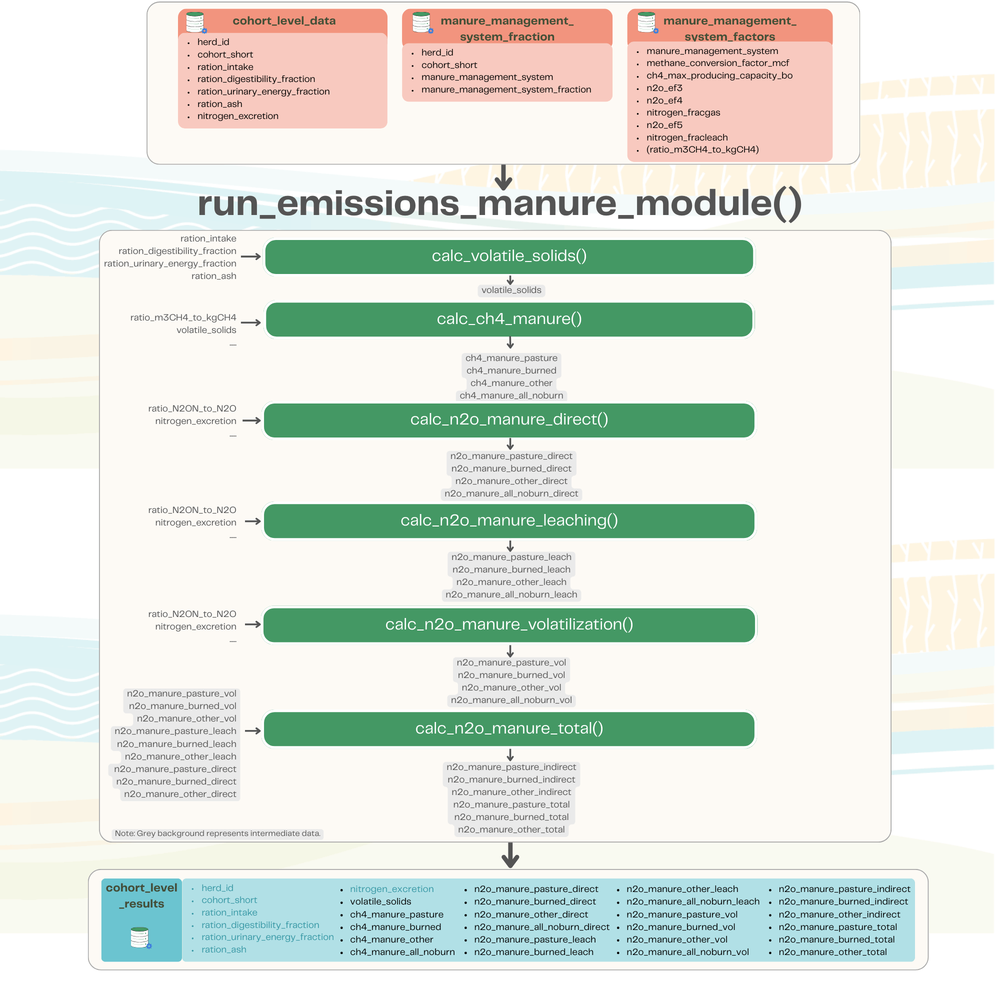
[`calc_volatile_solids()`](../reference/calc_volatile_solids.html)
(IPCC 2006/2019, Eq. 10.24).-
Methane (CH₄) emissions from manure management are
computed from VS and MMS-specific factors (MCF and B₀), reported by MMS
group (pasture, burned, other) using
calc_ch4_manure()(IPCC 2006/2019, Eq. 10.23). -
Direct N₂O emissions are computed from nitrogen
excretion and MMS-specific EF3 values, reported by MMS group using
calc_n2o_manure_direct()(IPCC 2006/2019, Eq. 10.25). - Indirect N₂O emissions are the sum of:
- Volatilisation-driven N₂O from MMS-specific nitrogen losses
(FracGas) and EF4 using
calc_n2o_manure_volatilization()(IPCC 2006/2019, Eq. 10.26–10.28). - Leaching/runoff-driven N₂O from MMS-specific nitrogen losses
(FracLeach) and EF5 using
calc_n2o_manure_leaching()(IPCC 2006/2019, Eq. 10.27–10.29).
-
Total N₂O (direct + indirect) is summed by MMS
group using
calc_n2o_manure_total().
Feed Production Emissions Module
See run_emissions_ration_module()
for full documentation.
Computes cohort-level average greenhouse gas emission factors from feed production by weighting the emission factors of individual feed components by diet composition. Returns diet-level average GHG emission factors by gas and emission source for each cohort.
The module joins ration shares with feed emission factors by
feed_id and applies the following calculation sequence:
- Merge ration shares with emission factors at the feed-component level.
-
Compute feed-component contributions (row-wise) for
each emission source by multiplying the ration share of each feed
component (
feed_ration_fraction) by the corresponding emission factor:- CO₂ from fertilizer manufacture —
calc_co2_ration_fertilizer() - CO₂ from pesticide manufacture —
calc_co2_ration_pesticides() - CO₂ from on-field crop activities —
calc_co2_ration_crop_activities() - CO₂ from land-use change (no peat) —
calc_co2_ration_luc_nopeat() - CO₂ from land-use change (peat) —
calc_co2_ration_luc_peat() - N₂O from fertilizer use —
calc_n2o_ration_fertilizer() - N₂O from manure applied to soil —
calc_n2o_ration_manure() - N₂O from crop residues —
calc_n2o_ration_crop_residues() - CH₄ from rice cultivation —
calc_ch4_ration_rice()
- CO₂ from fertilizer manufacture —
- Sum component contributions within each cohort to obtain diet-level average emission factors (g gas/kg DM).
Overview of the GLEAM feed production emissions module with functions, input and output:
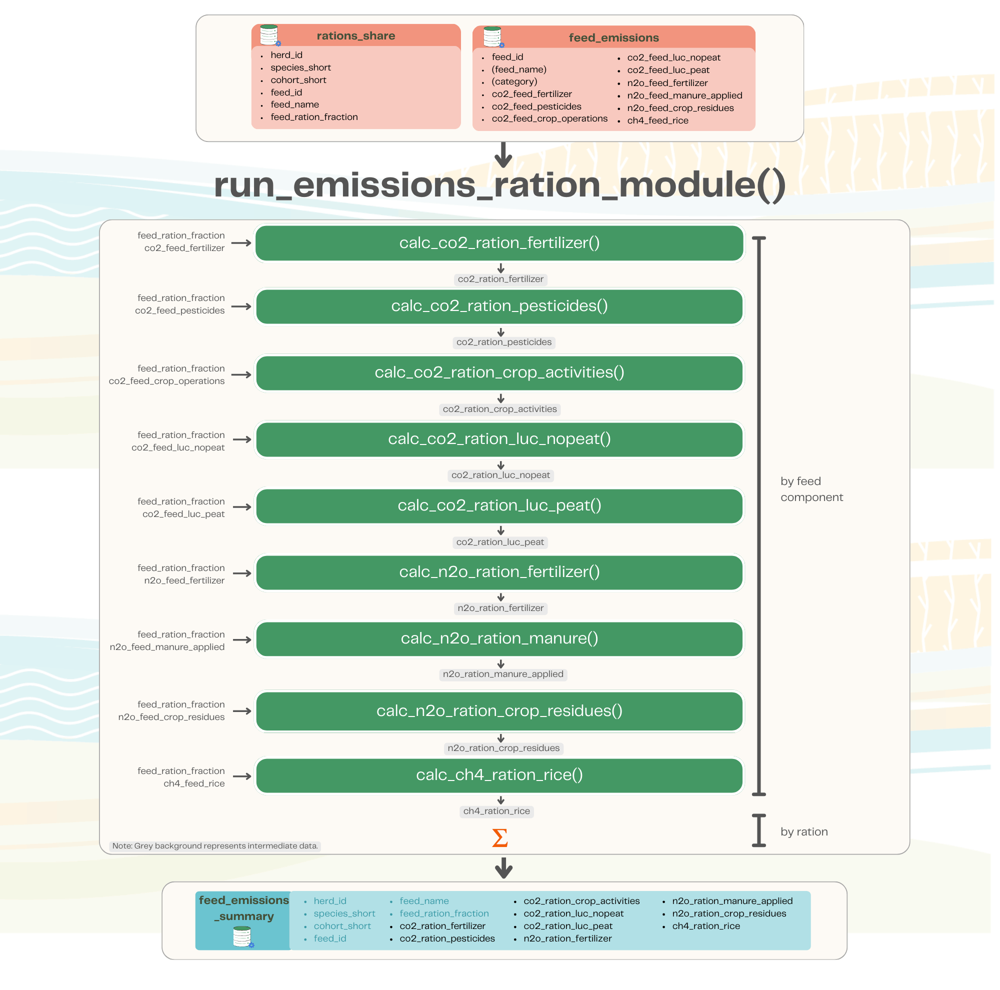
Production Module
See run_production_module()
for full documentation.
Computes cohort-level production outputs over the assessment period by combining cohort-level herd structure inputs with herd-level production parameters. The module returns milk, fibre, and meat outputs for each cohort.
Overview of the GLEAM production module with functions, input and output:
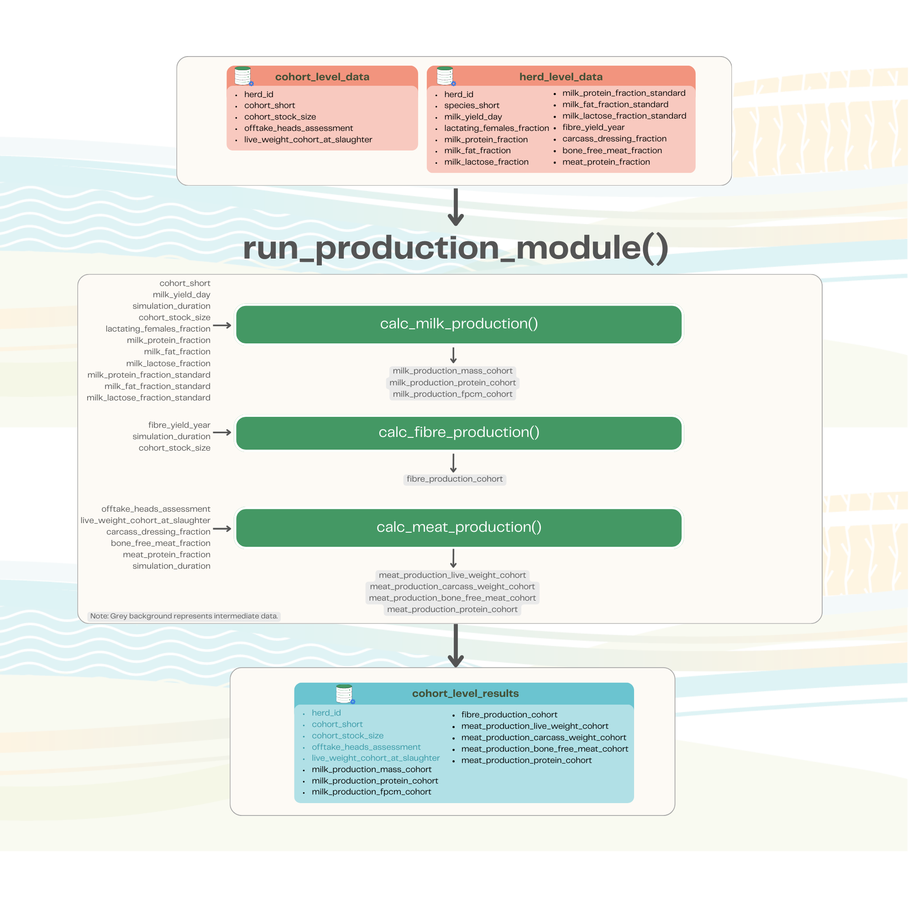
The following calculation sequence is applied:
- Milk outputs (raw mass, protein, and fat-protein-corrected milk —
FPCM) are computed using
calc_milk_production(). - Fibre outputs (wool, cashmere, mohair) are computed using
calc_fibre_production(). - Meat outputs (live weight, carcass weight, bone-free meat, and
protein) are computed using
calc_meat_production().
Emission Allocation Module
See run_allocation_module()
for full documentation.
Overview of the GLEAM emissions allocation module with functions, input and output:
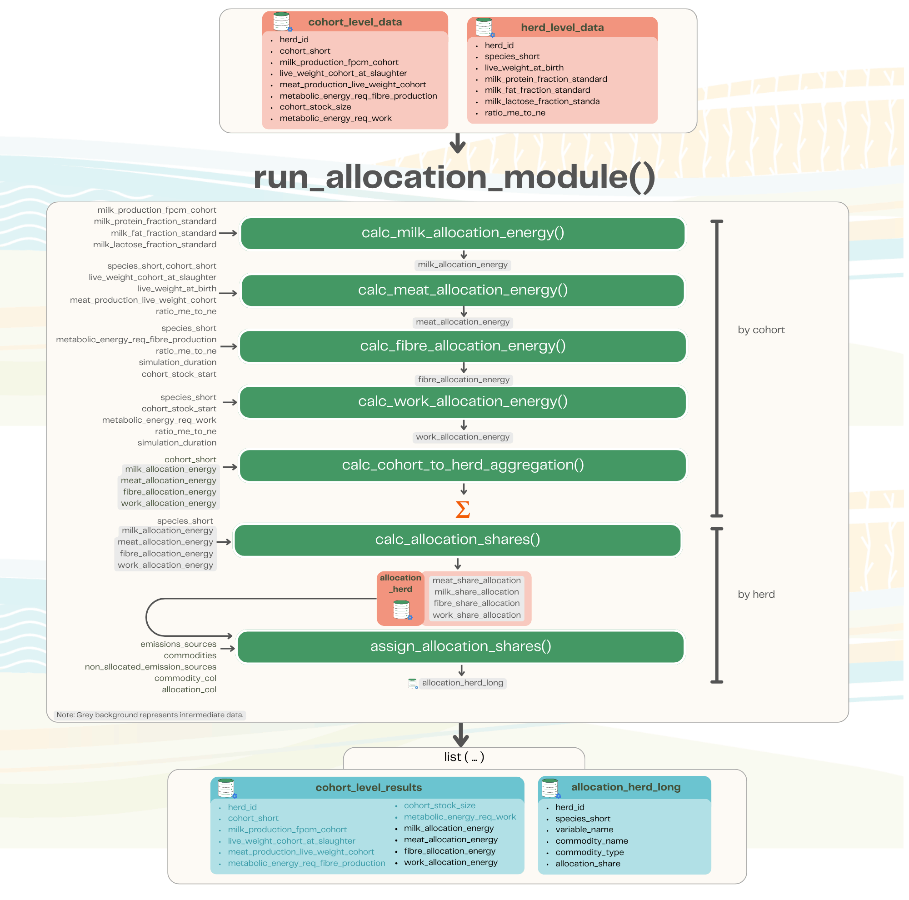
The pipeline consists of the following steps:
-
Cohort-level energy allocation terms are computed
for each commodity:
- Meat —
calc_meat_allocation_energy() - Milk —
calc_milk_allocation_energy() - Fibre —
calc_fibre_allocation_energy() - Work (draught power) —
calc_work_allocation_energy() - Eggs — set to 0 (not yet implemented)
- Meat —
-
Cohort-level energy terms are aggregated to herd
level using
calc_cohort_to_herd_aggregation(). -
Herd-level allocation shares are computed using
calc_allocation_shares(). -
Allocation shares are reshaped to long format and
assigned to emission sources using
assign_allocation_shares().
Aggregation and Reporting Module
See run_aggregation_module()
for full documentation.
This is the final step of the GLEAM pipeline. It generates final herd-level results by aggregating key cohort-level outputs, scaling variables over the assessment duration, allocating emissions to commodities, and converting CH₄ and N₂O emissions to CO₂-equivalents (CO₂eq) using selected 100-year Global Warming Potential (GWP-100) factors.
Overview of the GLEAM aggregation module with functions, input and output:
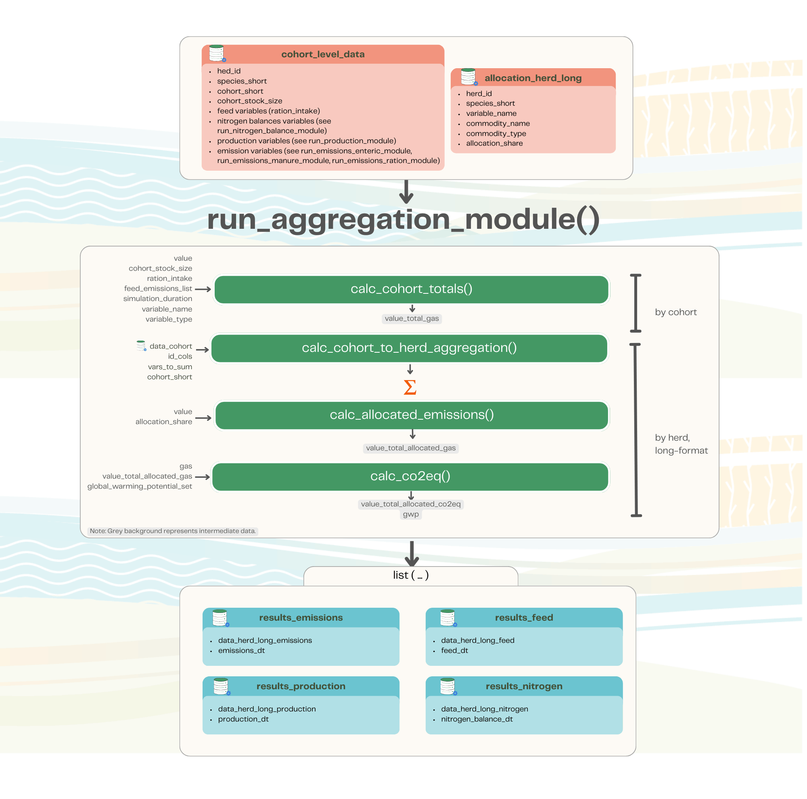
The following calculation sequence is applied:
- Cohort-level variables are reshaped from wide to long format.
- Variables are classified into
"Feed","NitrogenBalance","Production", and"Emissions". - Cohort totals are calculated using
calc_cohort_totals(). Production variables are retained as provided; emissions, feed, and nitrogen balance variables are scaled using cohort stock size and simulation duration. - Cohort totals are aggregated to herd level using
calc_cohort_to_herd_aggregation(). - Herd-level emissions are merged with commodity allocation shares.
- Emissions are allocated to commodities using
calc_allocated_emissions(). - Gas type (CH₄, N₂O, CO₂) is identified from the emission variable name.
- Allocated emissions are converted to CO₂eq using
calc_co2eq()and the selected GWP-100 option (AR4, AR5, or AR6). - Final output tables are produced summarising herd-level results for emissions, feed, production, and nitrogen balance.